In the first part of this course (OOP), we will be learning Swift by creating command line tools. In the second part of the course (UI), we will be learning UI programming by creating OS X applications.
Start Xcode by clicking on the icon in the Dock. The launcher screen will appear, where you can create a new project (or find a shortcut to a recent one you've worked on before).
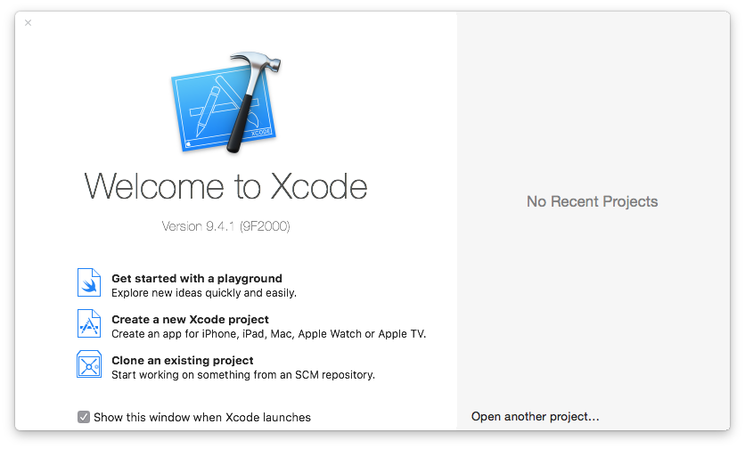You can create a new project by choosing Create a new Xcode project, or from the File menu by selecting New -> Project. To create a command line tool, select Command Line Tool template from the OS X->Application group.
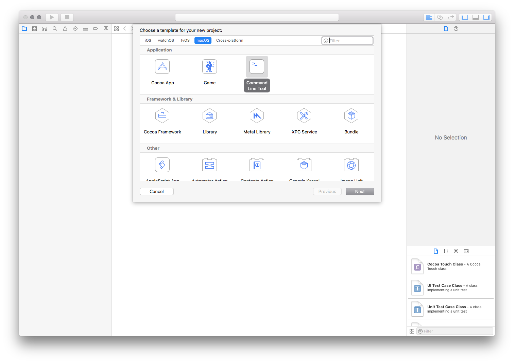After clicking Next, set "prog1.1" as the Product Name, and whatever you like for the Organization name and Company Identifier. Make sure that the Language option is set to Swift.

Save the project to the (local) directory containing these instructions. Make sure that you uncheck the Create Git repository option (as this will create a new repository inside the directory -- useful if you're starting from scratch but we're not).
When you click Create you will see the build settings for your new program. These are used to select the architecture/compiler/debugger that you want to use in your project. We won’t be changing the default build settings, but it’s nice to know how to do it if necessary.
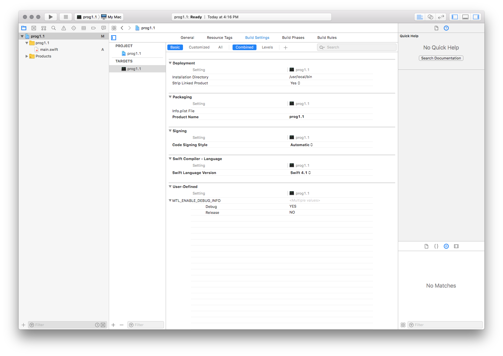Your first Swift program
Familiarise yourself with different areas of the Xcode window (show in the image below). Use the navigator (on the left side of Xcode) to find main.swift, which contains a ready-made "Hello World" program. If you you don’t see the Debug console, select View->Debug Area->Activate Console from the menu to display it. This is a good time to try out the various view buttons in Xcode to get a feel for how they work and how you can change the environment to suit your needs.
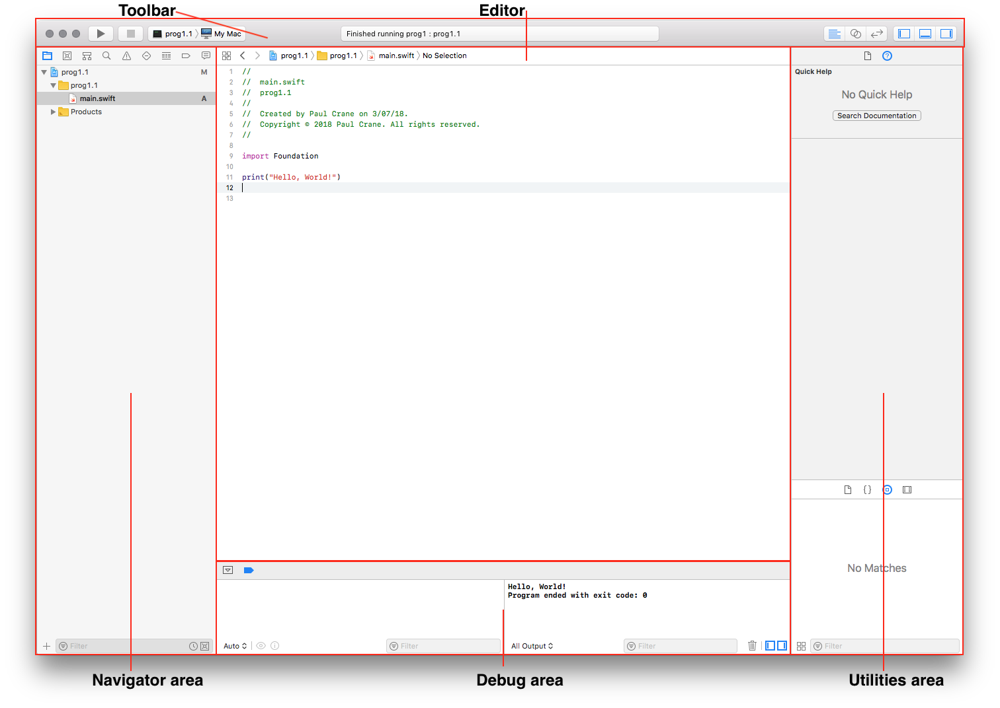Now click the Run triangle near the upper left of Xcode to build your project. Be patient while the program compiles (sometimes Xcode likes to take its time while compiling - you can monitor this progress in the status windows in the toolbar). Once compilation finishes, the program will run and you should see its output on the right-hand side of the debugger area.

Let's write a new Swift program. All the code for your first program is given below, but you're encouraged to type it all out yourself - it's not all that much to type if you skip all the comments.
import Foundation /* * Checks a word for emoji match and returns * corresponding unicode. If no emoji match found, * the word string is returned unchanged. * * @param: word - string to match with emoji * * @return: String - utf code for matched emoji * or the original string */ func emojicode(word: String) -> String { // Convert the characters in the string // to lowercase and check for emoji match switch word.lowercased() { case "beer": return "\u{1F37A}" case "television", "tv": return "\u{1F4FA}" // Switch statements must cover all the cases, // the default case is taken when no other // cases match default: return word } } /* * Prints a string replacing matched words with * corresponding emoji * * @param: str - display * * @return: String - argument string with some words replaced * with utf code for corresponding emojis */ func emojiate(str: String) -> String { // Break the string into separate // word tokens. Start with the empty token var word: String = "" var result: String = "" // Iterate over every character in the string for char: Character in str { // Check the character... if(String(char) >= "A" && String(char) <= "z") { // If the next character is a letter, add it // to the word token word.append(char) } else { // If the next character is not a letter, // try to convert the last word token // to emoji and add it to result string // (in swift addition operator concatenates // string) result += emojicode(word: word) // Add the current non-letter character to // the result (swift doesn't allow addition // of Character to String, so use append // method of String to concatenate a Character) result.append(char) // Clear the word token word = "" } } // Add the last word token to the result string // (matching it with emoji if possible) result += emojicode(word: word) // Return the resulting string return result } // Define a string constant let myString = "No TV and no beer make Homer something something." // Convert it to emoji string let emojiString = emojiate(str: myString); // Print the emojiString print(emojiString)
As you type, Xcode will not only autocomplete (using the tab) your variable names and classes that you want, but it will highlight any potential problems that it notices (on the left hand side of the editor). Warnings are noted with a yellow triangle and errors are noted with a red stop sign. If you click on the triangle or stop sign, the warning/error will be displayed for you. For instance, in the screenshot below, the return statement from emojiate function has been commented out. Since the function signature specifies it should return a String, Xcode will display an error message, which gives clue to why the program won't compile.
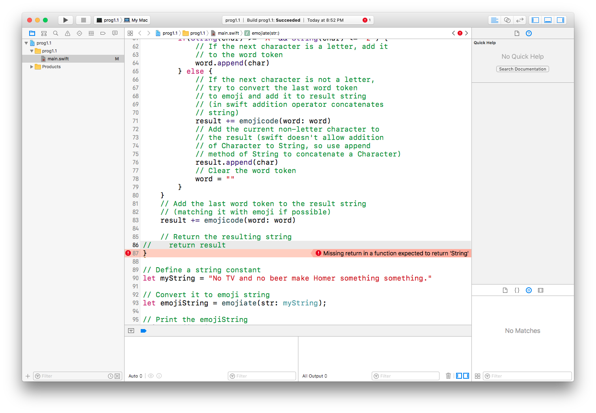Make sure you understand how the program works. Here's a general description of what is going on. Function emojicode(String) -> String takes a string a an argument and checks for match with a set of keywords, for which UTF emoji codes are provided. In the above program there are only two emojis that match three keywords. If a match is found, the function returns a string with corresponding UTF code, otherwise the original string is returned. Function emojiate(String) -> String parses its argument string into separate word tokens and replaces each with the result of emojicode(String) -> String. A the end it returns the emojiated string. The main program, below the two functions, defines a constant string, and then uses the emojiate(String) -> String function to create an emoji version of that string. The resulting string is sent to the output at the end. Run the program to see the result.
Try to modify and expand this program. If you'd like to add more emoji keywords, you can find a table of UTF8 codes here. Try to emojiate different strings. Have fun.
Debugging
In case the warning/errors provided in the editor are not enough, Xcode supports a debugger called lldb (it's Apple's version of gdb). Lldb allows you to step through your code as it is executed. To accessed the debugger you need to set a breakpoint (or breakpoints) in your code, where you wish the program to pause. You'll be able ton examine the values of your variables at that point of execution. Breakpoints can be set by clicking on the left hand side of the editor, on the line where you wish the execution to pause. In the screenshot below, a breakpoint has been placed on line 77 (if you'd like Xcode to display line numbers, set the Preferences->Text Editing->Show Line Numbers option in Xcode menu). Now, if you run your program, its execution will be paused exactly there. In the debugger window, on the left, you can see the values of all the variables at that moment. You can let the program continue, or step through line by line, step in and out of individual functions by using the buttons in the debugger menu (marked in the screenshot below).
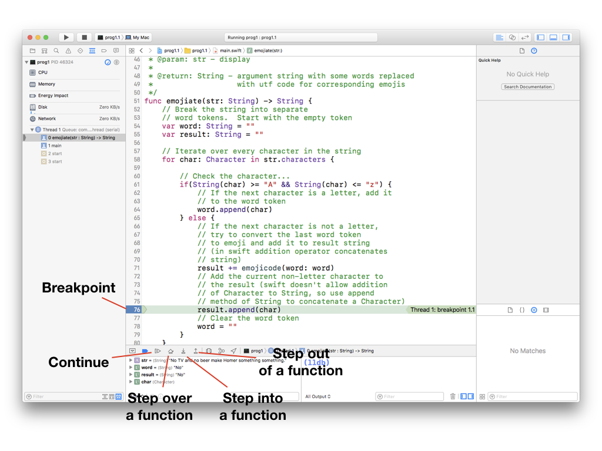Press the continue button in the debugger menu. The program will run and stop again at the same line (if you haven't disabled the breakpoint), except it will be at a different iteration of the loop - you can tell by different values of the variables. 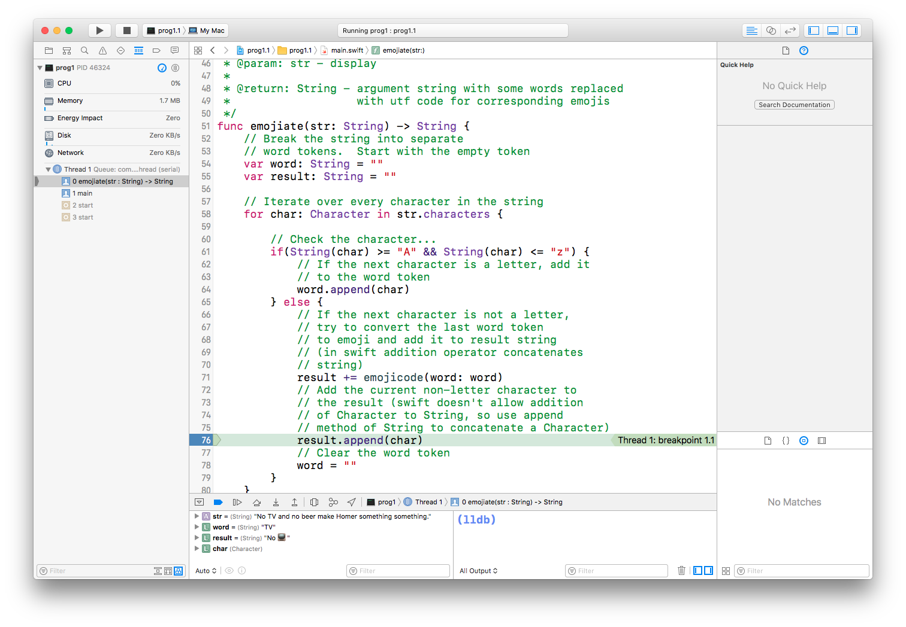 To disable a breakpoint just click on it (it will fade a bit to show that it's been disabled). You can remove a breakpoint completely by right-clicking and selecting Delete Breakpoint.
Playgrounds
Xcode provides another means of developing your program, using a feature called playground. A playground is a project workspace, where the code is compiled and evaluated as you type. This is different to the standard project, where the editor does some pre-processing to detect syntax inconsistencies, but the code is not complied, nor run, until you hit the run button. In a playground, the code is compiled and run as you type it...and the results are shown immediately.
To create a new playground, from the menu select File->New->Playground. In the dialog window that comes up, give your playground project a name, such as "playground1.1". Make sure to select OS X as the Platform. Click Next to create the new project.
Copy and paste the emojiate program into the playground editor. If you stop typing/pasting and wait, the code will be automatically compiled. Since you just dropped a lot of code all at once, it may take some time. In the end you should see the state of program variables on the right-hand side at various stage of execution (as shown in the screenshot below).
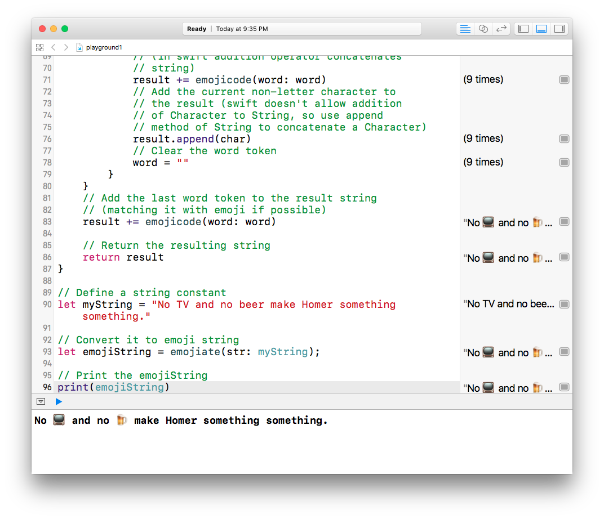Most of the labs in this course will not use playground projects, but you might find playgrounds useful as a test bed for learning, experimenting and testing your code.
Committing the changes
At the beginning of the lab you created a fork of the main repository. This created your own personal copy of the repo on GitHub, you then cloned it to your desktop. Now that we've made some changes we need to commit them first to your local repository, and then push the changes to the remote.
Xcode gives you a hint as to what files have changed. In the screenshot below, you'll see an 'M' next to your prog1.1 project (where 'M' means Modified) and an 'A' next to your main.swift (where 'A' means Added).
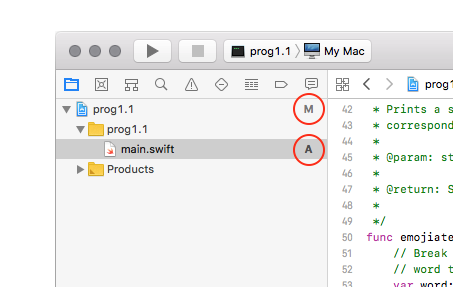The first thing we're going to do is to commit the project. Right click on the prog1.1 and select the Source Control -> Commit Changes option from the drop down. You'll be asked to enter a commit message -- so enter something useful. Don't tick the 'push to remote' option yet.
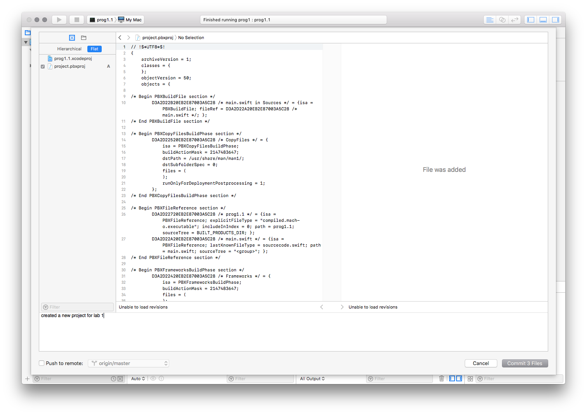Now that the project has been committed, we need to make sure that the source code's changes are saved. Follow the same steps as above but this time enable the 'push to remote' option.
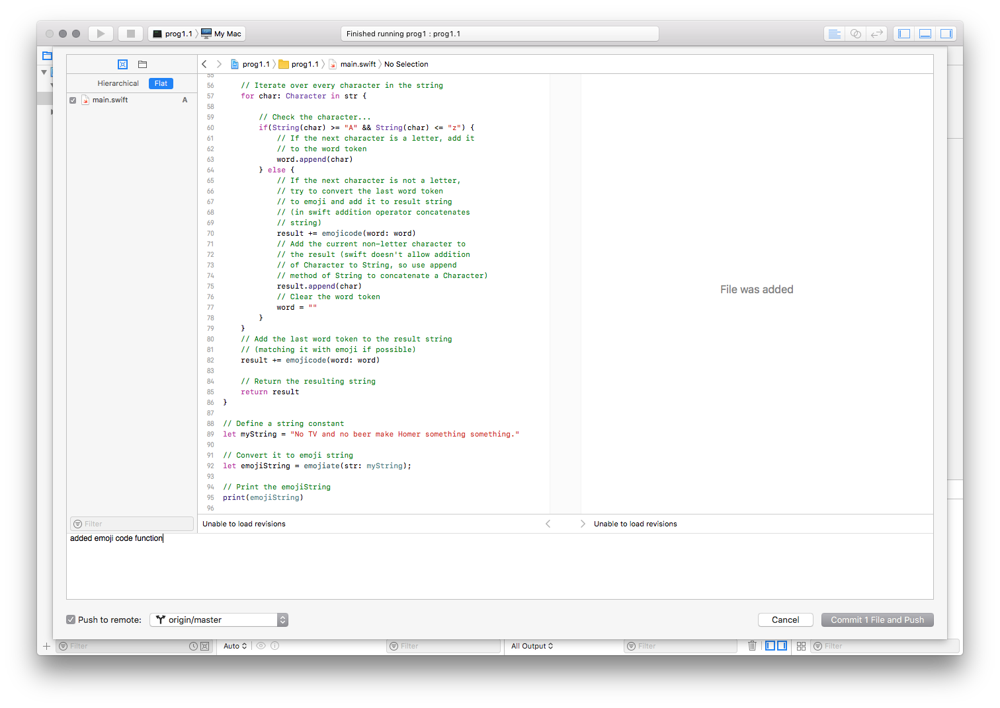Once these changes have been pushed, have a look at your repository on GitHub, and you should see the project and source code there.